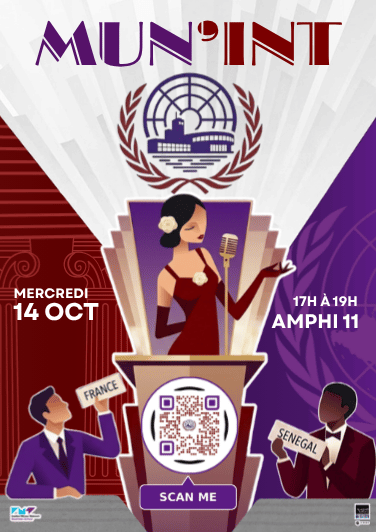
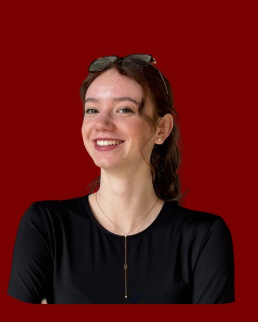
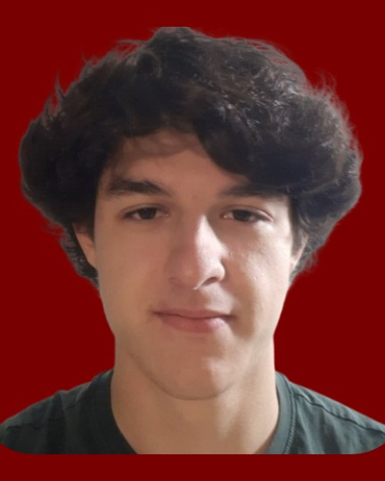
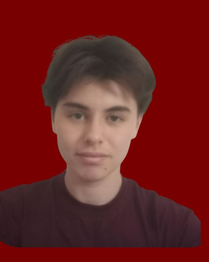
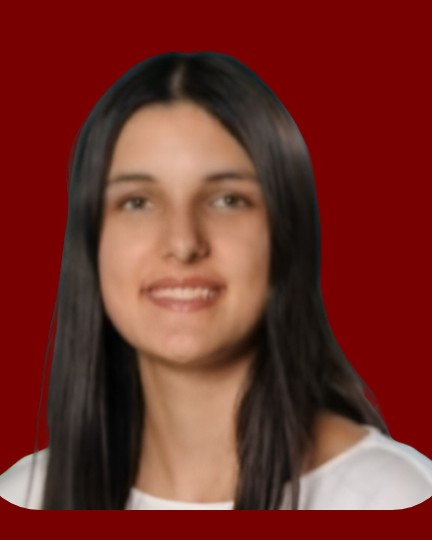
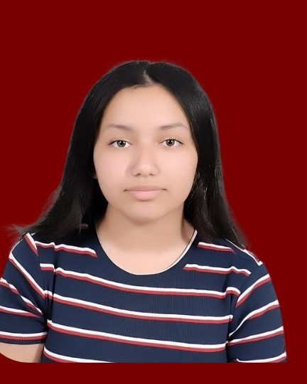

MUN’INTle club de débat onusien de l’INTthe UN-style debate club of INT
Représentez un pays, négociez, faites voter vos résolutions. Comme à l’ONU, sur le campus de Télécom SudParis et IMT-BS.Represent a country, negotiate, pass your resolutions. Just like at the UN, on the Télécom SudParis and IMT-BS campus.
États-UnisURSSCubaRoyaume-UniFranceGhanaChiliIrlandeRoumanieVenezuelaÉgypteConseil de sécurité · 1962États-UnisURSSCubaRoyaume-UniFranceGhanaChiliIrlandeRoumanieVenezuelaÉgypteConseil de sécurité · 1962
Le clubThe club
Un club pourA club toapprendre à convaincre.learn to persuade.
Né en 2025 sur le campus d’Évry, MUN’int réunit les étudiants de Télécom SudParis et d’IMT-BS autour d’une idée simple : débattre comme à l’ONU.Started in 2025 on the Évry campus, MUN’int brings together students from Télécom SudParis and IMT-BS around one simple idea: debating like at the UN.
65
membres dans notre communauté WhatsAppmembers in our WhatsApp community
25
délégations pour la crise de Cubadelegations for the Cuban crisis
1H30
de débat à 20 membres sur le trafic d’armesof debate with 20 members on arms trafficking
2025
année de création, au sein du BDEthe year we started, within the student union
I.Notre histoireOur story
D’une idéeFrom an ideaà une communauté.to a community.
Sept. 2025Sept. 2025
Le club est lancéThe club is born
Fondé par Tymor Bougarras et Lou Dixneuf, en 1re année de bachelor, et rattaché au BDE.Founded by Tymor Bougarras and Lou Dixneuf in their first bachelor year, as part of the student union.
Février 2026Feb. 2026
Séance de découverteDiscovery session
Pour initier les curieux au MUN et à ses règles.To introduce curious students to MUN and its rules.
Printemps 2026Spring 2026
La communauté granditThe community grows
65 membres sur WhatsApp et un débat de 1h30 à 20 sur le trafic d’armes illégales.65 members on WhatsApp and a 1.5-hour debate with 20 members on illegal arms trafficking.
Sept. 2026Sept. 2026
Deuxième rentréeSecond year
Nouvelle campagne d’inscriptions pour 2026-2027.A new sign-up campaign for 2026–2027.
14 oct. 202614 Oct. 2026
Crise de CubaCuban crisis
Première simulation de l’année, 25 délégations au Conseil de sécurité.First simulation of the year, 25 delegations at the Security Council.
19 nov. 202619 Nov. 2026
Procès TrumanTruman trial
Notre premier procès historique. Inscriptions ouvertes.Our first historical trial. Sign-ups are open.
II. Notre missionII. Our missionLe MUN’int a pour mission de donner aux élèves l’opportunité de développer des compétences essentielles pour leur avenir, tout en les sensibilisant aux enjeux internationaux.MUN’int’s mission is to give students the chance to build skills that matter for their future, while raising their awareness of international issues.
III.Nos objectifsOur goals
Ce que l’onWhat you’llvient chercher.get out of it.
a)
Initier au débat et à l’éloquence, en français comme en anglais.Learn debate and public speaking, in French and in English.
b)
Développer l’argumentation, l’esprit critique et la prise de parole.Build reasoning, critical thinking and speaking skills.
c)
S’initier à la diplomatie, à la négociation et au compromis.Discover diplomacy, negotiation and compromise.
d)
Progresser en anglais grâce à des simulations en anglais.Improve your English through simulations held in English.
e)
Organiser des formations régulières et des simulations internes.Run regular training and internal simulations.
IV.Qu’est-ce qu’un MUN ?What is a MUN?
Une simulationA UN simulation,de l’ONU, en vrai.for real.
Chacun représente un pays, défend ses intérêts et négocie pour faire voter une résolution. On parle à la 3e personne, on lève sa pancarte pour prendre la parole, et on reste toujours diplomate.Each participant represents a country, defends its interests and negotiates to pass a resolution. You speak in the third person, raise your placard to take the floor, and always stay diplomatic.
Les déléguésDelegates
Vous. Chacun parle au nom d’un pays.You. Each speaks for a country.
La présidenceThe chairs
Elle donne la parole et tient le temps.They give the floor and keep time.
Le comitéThe committee
L’organe de l’ONU que l’on simule.The UN body being simulated.
La résolutionThe resolution
Le texte final, négocié puis voté.The final text, negotiated then voted.
L’appelRoll callChaque délégation répond « présente ».Each delegation answers "present".
Discours d’ouvertureOpening speechesUne minute pour poser sa position.One minute to set out your position.
DébatsDebateCaucus modérés et non modérés.Moderated and unmoderated caucuses.
RésolutionResolutionLes alliances rédigent un projet de texte.Alliances draft a text.
Le voteThe voteAmendements, puis vote final.Amendments, then the final vote.
V.Nos projetsOur projects
Ce que nous voulonsWhat we wantconstruire.to build.
Projet 01Project 01
Des réunions chaque semaineWeekly meetings
Nous mettrons en place un rendez-vous hebdomadaire pour débattre et s’entraîner.We will set up a weekly session to debate and practise.
Projet 02Project 02
Des conférences en groupeConferences as a team
Nous irons ensemble à des conférences MUN d’autres écoles.We will attend MUN conferences hosted by other schools.
Projet 03Project 03
Des sorties diplomatiquesDiplomatic visits
Nous organiserons des visites à l’ONU, dans les institutions européennes et des ambassades.We will organise visits to the UN, EU institutions and embassies.
Projet 04Project 04
Un grand rendez-vous annuelA big annual event
Nous créerons une simulation inter-écoles sur notre campus.We will create an inter-school simulation on our campus.
Projet 05Project 05
Des partenariatsPartnerships
Nous nouerons des liens avec d’autres écoles et universités.We will build links with other schools and universities.
Projet 06Project 06
L’internationalGoing international
À terme, nous représenterons nos écoles dans de grandes conférences à l’étranger.In the long run, we will represent our schools at major conferences abroad.
SimulationsSimulations
NosOursimulations.simulations.
Chaque simulation a son comité, son époque et son affiche. Voici celles que nous avons vécues, et celle qui arrive.Each simulation has its own committee, era and poster. Here are the ones we’ve done, and the one coming up.

Affiche de la simulationSimulation poster
Simulation n° 02 · Conseil de sécuritéSimulation no. 02 · Security Council
La crise des missilesThe Cuban Missilede Cuba.Crisis.
New York, 23 octobre 1962. Un avion espion U-2 vient de photographier des missiles soviétiques à 150 km de la Floride, et Kennedy annonce un blocus naval. Le vrai Conseil n’avait voté aucune résolution : nos délégations ont repris la séance.New York, 23 October 1962. A U-2 spy plane has photographed Soviet missiles 150 km from Florida, and Kennedy announces a naval blockade. The real Council passed no resolution: our delegations picked up the session.
DateDateMer. 14 oct. 2026Wed. 14 Oct. 2026
ComitéCommitteeConseil de sécuritéSecurity Council
DélégationsDelegations25
Camp américainUS camp
États-Unis, Royaume-Uni, France, Chine (Taïwan), Chili, VenezuelaUSA, UK, France, China (Taiwan), Chile, Venezuela
Camp soviétiqueSoviet camp
URSS, Roumanie, avec CubaUSSR, Romania, with Cuba
Non-alignésNon-aligned
Ghana, Égypte, IrlandeGhana, Egypt, Ireland
Palmarès · Crise de CubaAwards · Cuban crisis
Ils ont faitThey madel’histoire.history.
II
Prix IIPrize II
Intitulé à fournirTitle to come
Lauréat·e à fournirWinner to comeDélégation à fournirDelegation to come
I
Prix IPrize I
Meilleur déléguéBest delegate
Lauréat·e à fournirWinner to comeDélégation à fournirDelegation to come
III
Prix IIIPrize III
Intitulé à fournirTitle to come
Lauréat·e à fournirWinner to comeDélégation à fournirDelegation to come
Le trafic d’armesIllegal armsillégales.trafficking.
Notre premier grand débat : 20 membres réunis pendant 1h30 pour négocier une réponse internationale au trafic d’armes illégales.Our first big debate: 20 members spent 1.5 hours negotiating an international response to illegal arms trafficking.
DateDate25 mars 202625 March 2026
ParticipantsParticipants20
DuréeLength1h30
Simulation n° 03 · À venirSimulation no. 03 · Coming up
Le procès deThe trial ofHarry Truman.
Hiroshima et Nagasaki, août 1945. Pour la première fois, MUN’int passe au format procès historique. Préparez vos arguments.Hiroshima and Nagasaki, August 1945. For the first time, MUN’int moves to a historical trial format. Get your arguments ready.
A4 portrait, jamais recadréeA4 portrait, never cropped
Le bureauThe board
Ceux qui tiennentThe peoplela séance.running the session.
Sept étudiants qui préparent les simulations, forment les nouveaux et font vivre le club toute l’année.Seven students who prepare the simulations, train newcomers and keep the club going all year.
I.Bureau 2026-2027Board 2026–2027
Photo à fournirPhoto to come
PrésidentPresident
Tymor Bougarras
Co-fondateurCo-founder
Citation à fournirQuote to come

Vice-présidenteVice-President
Lou Dixneuf
Co-fondatriceCo-founder
Citation à fournirQuote to come

Vice-présidentVice-President
Mathieu Viala
Citation à fournirQuote to come

Secrétaire généraleSecretary General
Timothée Truong
Citation à fournirQuote to come

TrésorièreTreasurer
Violette Milian
Citation à fournirQuote to come
Photo à fournirPhoto to come
Responsable communicationHead of Communications
Emrick Rakotomahefason
Citation à fournirQuote to come

Événementiel et logistiqueEvents and Logistics
Marwa Ouaboun
Citation à fournirQuote to come
Une question pour le bureau ?A question for the board?
modelunitednationsint@gmail.com
II.Anciens bureauxPast boards
2025-2026
Le bureau fondateurThe founding board
Nom · rôle à fournirName · role to comeNom · rôle à fournirName · role to comeNom · rôle à fournirName · role to comeNom · rôle à fournirName · role to come
ActivitésActivities
Ce qu’on fait,What we do,concrètement.for real.
Voici ce qui se passe réellement au club, toute l’année.Here’s what actually happens at the club, all year long.
01
Des simulations sur le campusSimulations on campus
Conseil de sécurité, procès historique… On recrée une vraie séance : recherches sur son pays, prises de parole, négociation et rédaction de résolutions.Security Council, historical trial… We recreate a real session: researching your country, speaking, negotiating and drafting resolutions.
02
Des séances de découverteDiscovery sessions
Pour les débutants : règles de procédure, vocabulaire et codes du MUN, pour que personne n’arrive perdu.For beginners: rules of procedure, vocabulary and MUN codes, so nobody feels lost.
03
Des débats entre membresDebates between members
Sur l’actualité internationale. Le dernier a réuni 20 membres pendant 1h30 sur le trafic d’armes illégales.On current world affairs. The last one brought 20 members together for 1.5 hours on illegal arms trafficking.
04
Les coulisses des événementsBehind the scenes
Organisation, communication, logistique, création des affiches : chacun peut mettre la main à la pâte.Organisation, communication, logistics, poster design: everyone can pitch in.
RejoindreJoin
La séanceThe sessionest ouverte.is open.
Rejoindre MUN’int prend une minute. Voici tout ce qu’il faut savoir.Joining MUN’int takes one minute. Here’s everything you need to know.
I.ConditionsWho can join
Qui peutWho cannous rejoindre ?join us?
a)
Être à TSP ou IMT-BSStudy at TSP or IMT-BS
Le club est réservé aux étudiants des deux écoles. Vous venez d’ailleurs ? Le CINUP vous accueillera.The club is for students of both schools. Studying elsewhere? The CINUP will welcome you.
b)
Aucune expérience requiseNo experience needed
Ni géopolitique, ni aisance à l’oral : on vous forme.No politics, no public-speaking skills required: we’ll help you learn.
c)
Juste l’envie de débattreJust want to debate
Diplomatie, conseil, finance ou simples rencontres : il y a une place pour vous.Diplomacy, consulting, finance or just meeting people: there’s a place for you.
II.Le dérouléHow it works
De la curiositéFrom curiousà la tribune.to the podium.
1
Rejoignez la communautéJoin the community
Un clic sur le lien WhatsApp et vous recevez toutes les annonces.One click on the WhatsApp link and you get every announcement.
2
Repérez une séancePick a session
Date et salle sont annoncées sur Instagram et WhatsApp.Date and room are announced on Instagram and WhatsApp.
3
Recevez votre paysGet your country
On vous attribue une délégation et on vous aide à préparer votre position.You get a delegation and help preparing your position.
4
Prenez la paroleTake the floor
Le jour J, vous débattez, négociez et votez.On the day, you debate, negotiate and vote.
III.CommunautéCommunity
Tout commenceIt all startssur WhatsApp.on WhatsApp.
Dates, salles, inscriptions, débats : tout passe par notre communauté. Le lien est aussi en bio de notre Instagram.Dates, rooms, sign-ups, debates: it all happens in our community. The link is also in our Instagram bio.
Faut-il parler anglais ?Do I need to speak English?
Non. On débat en français comme en anglais, et le club est là pour vous aider à progresser, à votre rythme.No. We debate in French and in English, and the club is here to help you improve at your own pace.
Faut-il s’y connaître en politique ?Do I need to know about politics?
Pas du tout. Avant chaque simulation, on explique le contexte et les positions de chaque pays. La curiosité suffit.Not at all. Before each simulation, we explain the context and each country’s position. Curiosity is enough.
Je ne suis pas à l’aise à l’oral.I’m not comfortable speaking in public.
C’est le cas de beaucoup de membres au départ. On commence par des prises de parole courtes et on progresse ensemble.Many members felt the same at first. We start with short speeches and improve together.
Où ont lieu les séances ?Where do sessions take place?
Sur le campus d’Évry. La salle change à chaque fois : elle est annoncée sur Instagram et dans la communauté WhatsApp.On the Évry campus. The room changes every time: it’s announced on Instagram and in the WhatsApp community.
Je ne suis ni à TSP ni à IMT-BS.I’m not at TSP or IMT-BS.
Le club est réservé aux étudiants des deux écoles. Pour les autres, le CINUP est une très bonne porte d’entrée.The club is for students of both schools. For everyone else, the CINUP is a great way in.
ContactContact
Écrivez-Writenous.to us.
Une question, une idée de simulation ? Choisissez votre canal, on vous répond vite.A question, an idea for a simulation? Pick your channel, we’ll get back to you quickly.
Instagram
Les annonces et les coulissesNews and behind the scenes
Dates, salles, photos des simulations. Le lien WhatsApp est en bio.Dates, rooms, simulation photos. The WhatsApp link is in our bio.